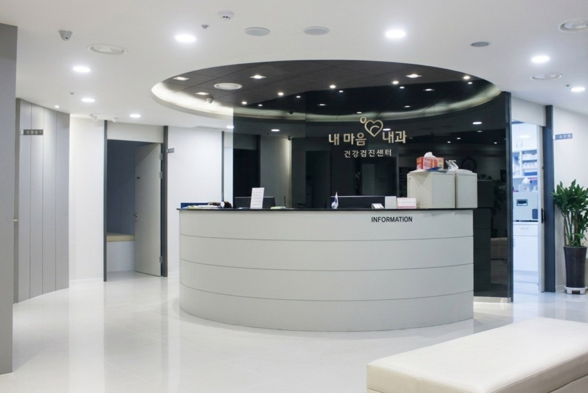
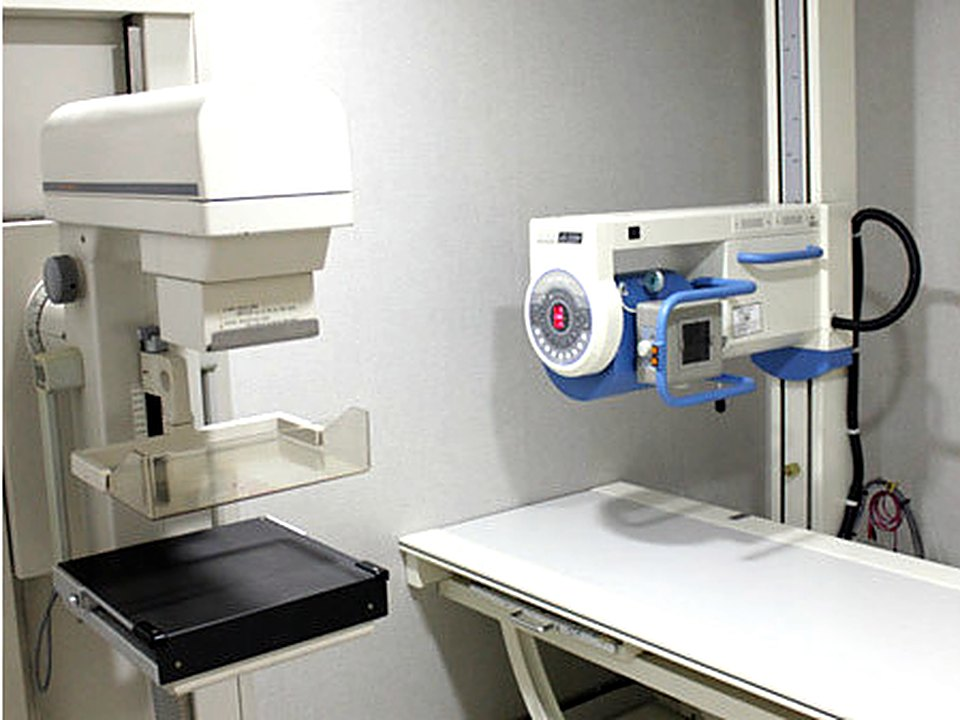
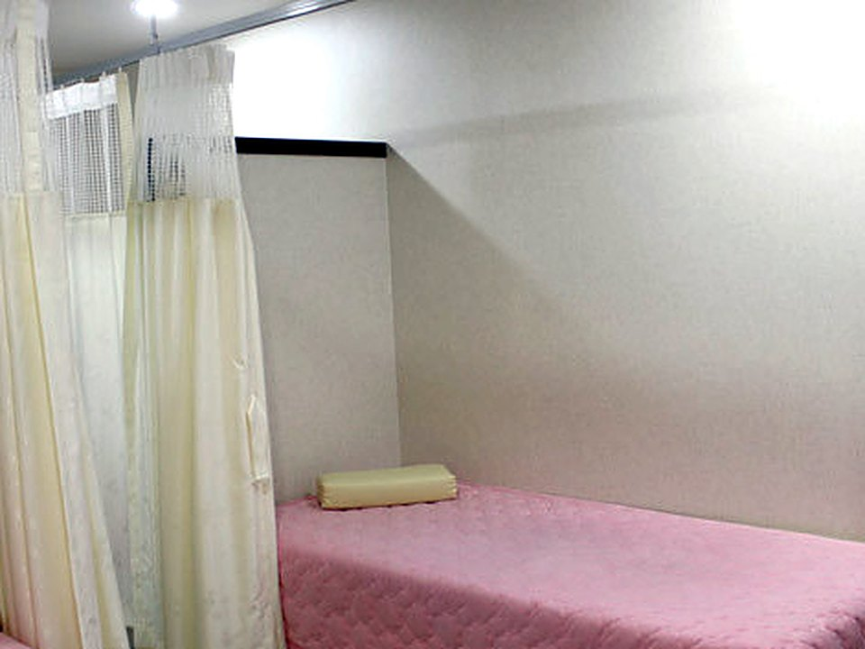
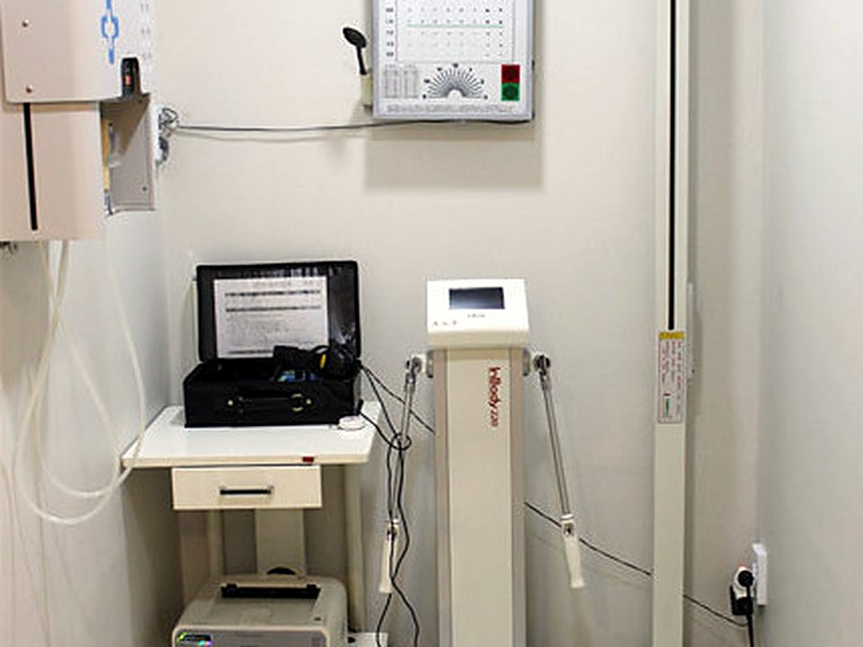
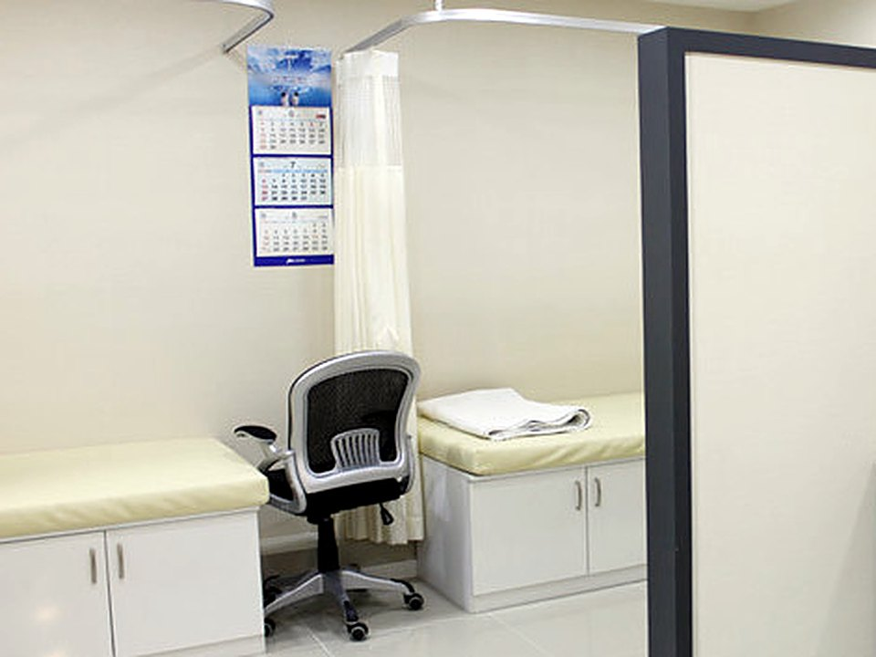
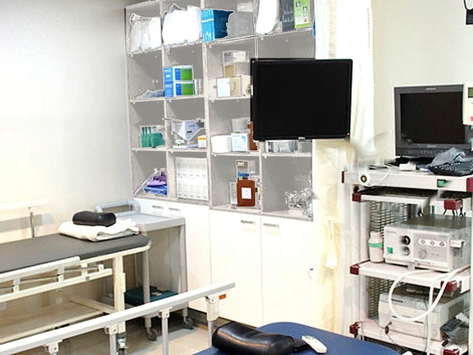
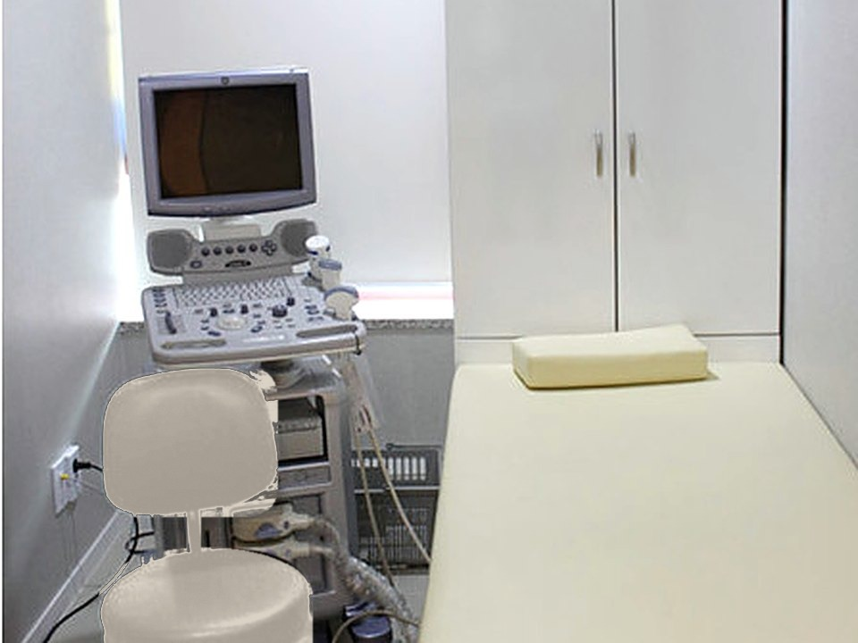

Exam Room 1 · Chief Director
Dr. Yongwook Kim Chief Director
Internal Medicine Specialist · Gastrointestinal Endoscopy Subspecialist
Your health, always close by
Hello,
Thank you for visiting MyHeart Internal Medicine.
With good facilities and our best care, we strive to go beyond each patient's satisfaction and bring happiness through medical care. We will treat every patient with warmth and sincerity.
Thank you.
Yongwook Kim, M.D., Chief Director
Internal Medicine Specialist · Gastrointestinal Endoscopy Subspecialist
Internal Medicine Specialist · Gastrointestinal Endoscopy Subspecialist






